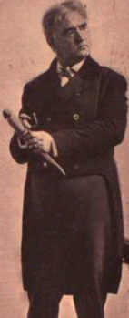

){kind=link}
){kind=link}


Performing Pudd'nhead WilsonLess than a year after its publication, The Tragedy of Pudd'nhead Wilson was dramatized as a melodramatic comedy in a prologue and four acts. The play was the work of Frank Mayo, an American actor best known for his portrayal of Davy Crockett. Mayo's script is available below. Rehearsals began 19 March 1895. It opened out of town in Hartford, on April 8th, and had its New York premiere at the Herald Square Theatre on Monday, April 15th. As you can see for yourself below, reviews were favorable but not enthusiastic. The critics regularly mentioned the problems of translating a work of fiction to the stage, though not all of them seem to have read the novel. Mayo's work in the title role and the dramatic force of the final, courtroom act were cited as the play's most taking points. MT attended a performance on 22 May 1895, and in his remarks afterward expressed complete satisfaction with Mayo's handling of the story. The production was booked into New York for a six-week run, and then seems to have gone straight on the road. Mayo died while touring with the play, on route to Omaha for what would (according to his obituary in the Times on 9 June 1896) have been his 368th performance as Pudd'nhead. According to letters in the Barrett Collection from H.H. Rogers to MT, by March, 1896, the production was "at last" on its feet, and beginning to pay royalties; for that month it paid MT over $1400. Legal complications involving Mayo's estate and his partner took some months to settle. Not long after the 1896-1897 theatrical season began, however, the show did go on, with a new actor as Pudd'nhead and much of the same company behind him. The Schedule of Performances link below will let you follow the play during the first four years of its national run. Writing in 1912, Paine added that the play "is by no means dead, and still pays a royalty to the Mayo and Clemens estates." The play's success can be read in more than one way. Like the novel, Mayo's script climaxes with the trial at which the fingerprints prove that "Tom" is not just the criminal, but also a "negro and slave." Courtroom scenes tend to make for good drama, but it seems possible that this trial also served American audiences as a kind of ritual. The reviews you can read from around the country clearly suggest that "Tom" was portrayed as a villain in more melodramatic terms than the novel uses. In one promotional announcement, for example, he is referred to as "devilish and diabolical." Perhaps the play's appeal was derived in part from the idea of labeling, condemning and casting out the racial Other. A number of the reviewers, in northern papers like The New York Times as well as The New Orleans Times-Democrat, attribute "Tom's" villainy to his racial heritage. Probably the most frequently praised element in the play was the story it tells of "Pudd'nhead's" eventual triumph over public contumely. On the whole, reviewers gave little sign that the play was a serious confrontation with either slavery or race, treating it as essentially humorous, with strong elements of pathos and melodrama, and as a good account of the Old South, complete with quaint customs and fetching costumes. It troubled one reviewer that Roxy was "white" but acted "black," but most admired the expressiveness with which her character was portrayed. As you can see in the script, the theatrical business of the trial included some slapstick. Several reviewers, at least, objected to these comic bits as inappropriate in that situation. In general, however, the trial scene was seen as a thrilling conclusion to the gently but satisfyingly humorous "fun."
|